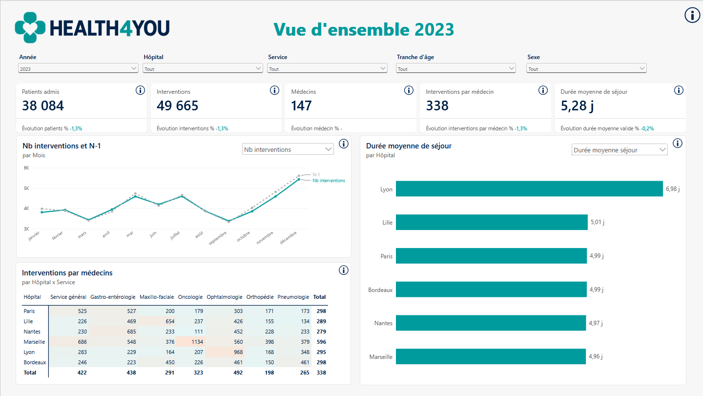
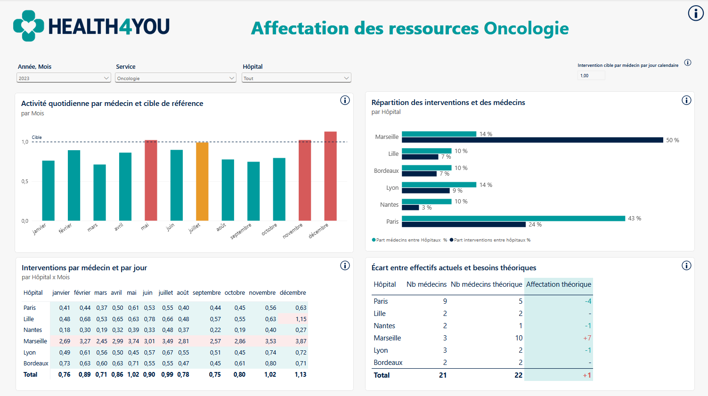
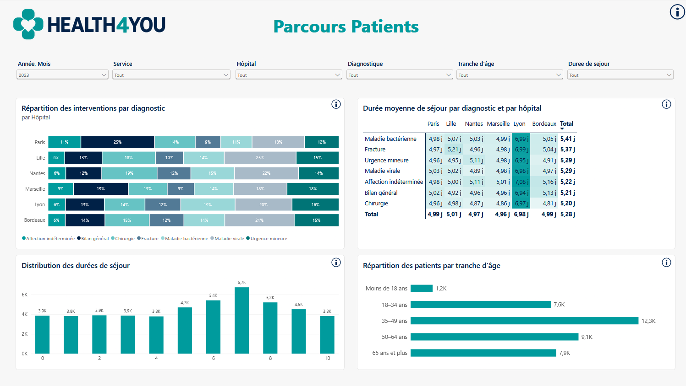

POWER BI · DAX · DATA MODELING · BUSINESS ANALYTICS
Analyse de l’activité hospitalière et allocation des ressources
Analyse de l’activité d’un réseau hospitalier afin d’identifier les déséquilibres de charge, d’étudier les durées de séjour et de construire des scénarios d’allocation des effectifs médicaux.
CONTEXTE
Transformer les données hospitalières en leviers de pilotage
L’objectif du projet était d’analyser l’activité d’un réseau de six hôpitaux afin de comprendre les différences de charge entre établissements et spécialités.
L’analyse couvre les années 2022 et 2023 et repose sur 100 000 interventions concernant plus de 60 000 patients. Les données d’activité ont été croisées avec les effectifs médicaux afin de construire des indicateurs de pilotage et d’identifier les principaux déséquilibres du réseau.
PRÉPARATION DES DONNÉES
Fiabiliser les données avant l’analyse
Une phase de préparation a permis de structurer les données nécessaires à l’analyse et de traiter plusieurs problématiques de qualité.
Les durées de séjour négatives ou supérieures à 30 jours ont notamment été exclues des analyses de durée, tout en conservant les interventions concernées dans les analyses de volume.
DATA MODELING
Construire un modèle adapté à l’analyse
Le modèle Power BI repose sur deux tables de faits : les interventions et les effectifs médicaux. Elles partagent plusieurs dimensions permettant d’analyser l’activité par hôpital, service, patient et période.
ANALYSE 2023
Une activité globalement stable mais des écarts importants
L’analyse 2023 met en évidence une activité légèrement inférieure à celle de 2022, mais surtout des différences importantes entre établissements dans la charge supportée par les équipes médicales.

ALLOCATION DES RESSOURCES
Identifier les déséquilibres entre établissements
Le croisement entre activité et effectifs permet d’identifier les établissements et spécialités présentant les niveaux d’activité par médecin les plus élevés.
Marseille se distingue notamment par un nombre d’interventions par médecin nettement supérieur aux autres établissements. L’oncologie constitue un exemple particulièrement marqué de ce déséquilibre.

DURÉE DES SÉJOURS
Lyon se distingue par des séjours nettement plus longs
La durée moyenne de séjour atteint 5,28 jours sur le réseau. Lyon se distingue avec une durée moyenne proche de 7 jours, contre environ 5 jours dans les autres établissements.
L’écart persiste lors des comparaisons par service, diagnostic et tranche d’âge. L’absence de séjours inférieurs à cinq jours à Lyon constitue également un point d’attention nécessitant une investigation complémentaire.

RECOMMANDATIONS
Transformer le diagnostic en pistes d’action
L’analyse permet de construire plusieurs scénarios d’optimisation des ressources, à considérer comme des hypothèses de travail devant être validées avec les équipes médicales et opérationnelles.
LIMITES DE L’ANALYSE
Des scénarios à valider avec le métier
Les scénarios d’effectifs reposent sur une cible hypothétique d’une intervention par médecin et par jour calendaire et sur des effectifs supposés constants.
Ils constituent donc un outil d’aide à la décision et non une recommandation de staffing directement applicable. Une analyse opérationnelle complémentaire devrait intégrer notamment les ETP, la présence réelle, la complexité des soins, les capacités en lits et l’organisation des sorties.
COMPÉTENCES MOBILISÉES